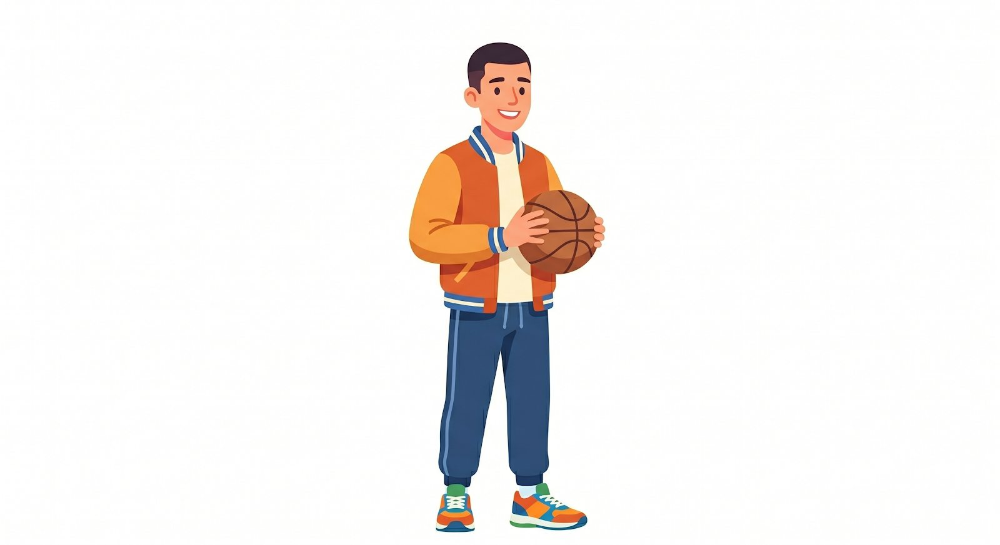
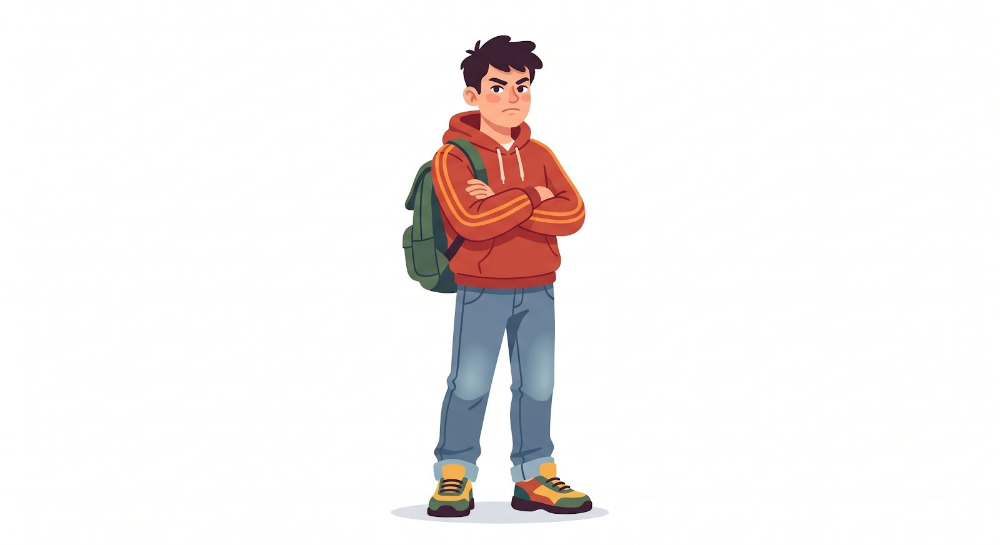

The Nerd
He is competent and studies hard.
Intermediate English · Unit 1
In this unit, students learn how to describe personality, behavior, and common stereotypes using adjectives and manner adverbs in meaningful contexts.
Learning Outcome: Interpret stereotypes and describe behavior using adjectives, manner adverbs, and examples from everyday situations.

Adjectives and manner adverbs help us describe people and actions. They are very useful when talking about personality, habits, and behavior.
Adjectives describe nouns, such as people, things, or places. They tell us what someone or something is like.
“She is a careful driver.”
Manner adverbs describe verbs. They tell us how an action is performed.
“She drives carefully.”
| Adjective Ending | Rule | Example |
|---|---|---|
| General | Add -ly | Slow → Slowly |
| Ends in -y | Change y to i + ly | Happy → Happily |
| Ends in -le | Change e to y | Terrible → Terribly |
| Ends in -ic | Add -ally | Artistic → Artistically |
These character examples help students notice the difference between describing behavior and labeling people. Use stereotypes carefully and respectfully.
He is competent and studies hard.

He is athletic and plays skillfully.

He is aggressive and speaks rudely.
He is stylish and creates creatively.
What is the difference between describing a person’s behavior and judging a person with a stereotype? Try to describe people with specific examples instead of general labels.